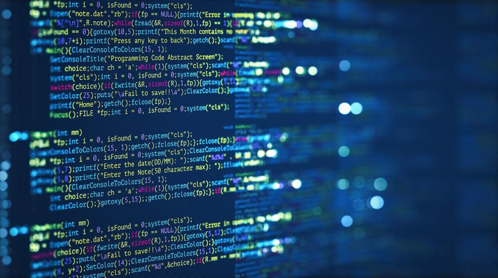

Bahasa Pemrograman
Hypertext Markup Language (HTML)
HTML (HyperText Markup Language) adalah bahasa markup yang digunakan untuk membuat dan mengatur struktur halaman web. HTML menyediakan kerangka dasar untuk konten yang akan ditampilkan di browser, seperti teks, gambar, video, dan tautan.
Cascading Style Sheets (CSS)
CSS (Cascading Style Sheets) adalah bahasa yang digunakan untuk mengatur tampilan dan desain dari halaman web. CSS bekerja bersama HTML dengan mengontrol gaya elemen, seperti warna, tata letak, ukuran font, dan jarak antar elemen, sehingga halaman web tampil lebih menarik dan sesuai dengan desain yang diinginkan.
JavaScript
JavaScript adalah bahasa pemrograman yang digunakan untuk menambahkan interaktivitas, animasi, dan berbagai fungsi dinamis lainnya pada halaman web. Berbeda dengan HTML yang menentukan struktur.
Tabel Bahasa Pemrograman
Berikut adalah contoh tabel sederhana yang berisi bahasa pemrograman populer:
| Bahasa | Tahun Diperkenalkan | Paradigma |
|---|---|---|
| Python | 1991 | Multi-paradigma |
| JavaScript | 1995 | Event-driven, Fungsional |
| C++ | 1985 | Berorientasi Objek |